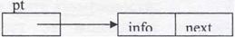

Алгоритмите в сайта са описани на псевдокод, което ги прави по-лесни за четене и разбиране.
УЕБ БАЗИРАНО ПРИЛОЖЕНИЕ ПО
СИНТЕЗ И АНАЛИЗ НА АЛГОРИТМИ
Структура от данни линеен списък
Линейният списък е линейна динамична структура, но за разлика от опашката, тук включването и изключването могат да стават на произволно последователността. Обичайно едно от полетата за информация за един от списъка играе ролята на ключ за идентификация на елемента и оби елементите на списъка са подредени в нарастващ ред на ключовете с наредба определя мястото на включване на нов елемент, а след изключ елемент от списъка, останалите елементи трябва отново да са подре; ключовете си. Това би могло да се направи и при компактно предста елементите на списъка, но операциите за включване и изключване ще v преместване на елементи в паметта. Затова един линеен списък оби свързваме с верижно представяне, заради удобствата за операциите вклю изключване.
Верижно представяне на списък чрез структурата масив
Да приемем за простота, че елемент на списъка има проста структура
За резервиране на адресно пространство за елементите на списъка може да използваме масив с тип на елементите, съвпадащ с типа info. Във всеки случай за представяне на указателя към следващ елемент във веригата е необходимо добавянето на паралелен масив с тип integer , тъй като указателят ще има стойност - индекс на следващия елемент. Така списъкът
може да бъде представен например така:
 1
1
L- 2

Към това трябва да свържем със списъка и една целочислена променлива, например list, която се нарича указател на списъка и чиято стойност сочи към първия елемент от списъка. Празен списък има стойност на указателя си такава, че да не сочи към валиден елемент от масива, например list = 0. Това отговаря на следната схема
След решението за конкретното физическо представяне на списъка следва да се реализират процедурите за извършване на операциите над списъка: инициализация на празен списък, обход на текущото състояние на списъка и операциите включване и изключване на елемент от списъка.
Операцията инициализация трябва да създаде празен списък. Това става със: init(list);
list:= 0;
Обхождането на списъка може да стане само от първия му елемент и последователно се обхождат всички елементи до достигане на края на списъка:
prntlist(list);
1 := list;
докато 1 ≠О прави
печат (info [l]);
1: =next[l];
Следващите две операции променят текущото състояние на списъка.
Операция включване на елемент с ключ х. Нека списъкът е подреден във възходящ ред по частта info. Стъпките, които трябва да се извършат са както следва:
- Намиране на свободно място с адрес р в адресното пространство и запис в информационната част на това пространство.
- Намиране на място на елемента в списъка според ключа му между елементите с адреси lр и 1 .
- Привързване на елемента в списъка.
Програмното решение на отделните стъпки е:
- Нека засега приемем, че разполагаме с процедура getnode(p), която връща свободен адрес р, ако има такъв, и нула, ако е запълнено адресното пространство. В последния случай операцията по включването ще бъде неуспешна.
getode(p); ако р≠0то info[p]:=x;
- Обход на списъка за намиране на място на новия елемент.
lp := list;l:= list;
докатоl≠ О and х > info[l] прави
lр:= l; l:= next[l];
- Привързване в списъка. Тук има две възможни ситуации: ако ключът на включвания елемент е по-малък от ключа още на първия елемент във списъка, в горния итеративен цикъл няма да се влезе нито веднъж. Тогава двата "указателя" 1 и lр имат една и съща стойност, равна на list. В този случай елементът трябва да се включи като пръв в списъка и това ще доведе до изменение на указателя на списъка list. Втората ситуация е, когато елементът се включва някъде вътре в списъка (включително и като последен). В този случай той има реален предходник с адрес в "указателя" lр. Това е отразено в следната стъпка от алгоритъма:
ако l=lp то next[p] := list; list:= р иначе
next[p] := next[lp];
next[lp] := р;
Така цялата процедура включване става: inlist(x,list,jl)
fl := false; getnode(p); ако pi'O то jl:=trие; iпjo[p]:=x;
l:=list; lp:=list;
докатоl≠О and х > info[l]прави
lр := l; l:= next[l];
ако l=lp то
next[p]:= list;
list:= р
иначе
next[p] := next[lp];
next[lp]:= р;
Операция изключване на елемент със зададен ключ х. За реализирането на тази операция следва да се изпълнят следните стъпки:
- Откриване на елемента подлежащ на изключване под адрес 1 с предходник в адрес lр. Тази стъпка изисква обхождане на списъка до откриване на търсения елемент. Ако до края на списъка елементът не се открие, операцията изключване ще бъде неуспешна;
- Отвързване на елемента от списъка (байпас);
- Освобождаване на заеманото от елемента място в адресното пространство.
Програмното решение на отделните стъпки:
- Обход на списъка до намиране на търсения елемент:
1:= list; lp := list;
докато1 l≠О and info[l]l≠х прави lр := 1; 1 := next[l];
Ако от итеративния цикъл се излезе с 1 = 0, това означава, че списъкът изцяло е обходен и елементът не е открит.
- Отвързване на елемента от списъка. Тук отново има две ситуации: изключва се първи елемент, тогава той няма реален предходник и се променя указателят на списъка; или се изключва вътрешен или последен елемент, адресът на предходника му е в "указателя" lр .
ако lр=l то
list:= next[l];
иначе
next[lp] := next[l];
- Освобождаване на мястото на изключвания елемент: нека засега приемем, че това се решава от процедурата freenode(l).
Цялата процедура изключване става:
outlist(x,list, jl)
l:= list; lр > list; jl:= false;
докатоl≠О and info[]≠ х прави
lр := l; l:= next[l];
ако 1 ≠0 то
fl:= true;
акоlр=l то
list := next[l];
иначе
next[lp] := next[l]; freenode(l);
За да могат да работят процедурите по включване и изключване на елементи, трябва да се решат алгоритмите на процедурите getnode и Jreenode. За тази цел трябва да се поддържа информация за свободното адресно пространство. Това може да стане чрез поддържане на един списък на свободните места с указател, например heap.
Като имаме предвид, че елементите на списъка на свободните места нямат информационна част, а ако едно място в масива info е свободно и съответното му място в масива пехл е свободно, то списъкът heap може да се поддържа от същия масив next.
Включването на нов елемент в основния списък ше означава изключване на елемент от списъка на свободното пространство heap и обратно - изключването на елемент от основния списък ще означава включване на мястото му в списъка heap.
Инициализацията на празен основен списък ще означава създаване на пълен списък на свободното престранство. С това уточнение, процедурата init ще се промени така:
init(list, heap);
list:= 0;heap:= 1;
за i:= 1 до тах прави
next[i]:= i+ 1;
next[ тах ] := О;
Няма значение кой елемент ще се изключва от списъка на свободното пространство при процедурата getnode и на кое място ще се включва елемент в списъка heap при процедурата freenode. Тогава двете операции изключване и включване в heap могат да се решат по принципа на стек: включва се и се изключва връх на стек, поддържан верижно.
Реализация на линеен списък чрез използване на динамична памет
Под динамична памет разбираме адресно пространство, което е вън ( паметта, заета от програмата, и което може в процеса на работата й да бъ; използвано. За да бъде възможно това, трябва езикът за програмиране (в случая Паскал) да има следните възможности:
- Възможност за използване на променливи-указатели, т.е. таки променливи, чиито стойности са адреси;
- Възможност чрез тези променливи да се вземат адреси от свободно: адресно пространство.
Указатели - това са променливи от прост тип като цяло, реално и т.н. За т) обаче няма предефинирана дума. Това е така, защото указателят може да е таю към произволен тип величина. Затова указателят се описва в раздела type 1 програмата като указател към определен тип обект: type ptr = <обект>;
Всяка променлива от тип ptr ще бъде указател към величина от тип <обект> var ptl, pt2 : ptr;
Съдържанието на променливите ptl и pt2 са адреси, съдържанието на които' величини от тип <обект>. Например, нека
type ptr = rеаl;
var ptl,pt2,ptr;
За да можем да представим последователност от данни като верижно представена структура с използване на указатели, в състава на всеки елемент от структурата, определен като <обект>, трябва да има поле за указател. За това е необходим комбиниран тип - запис. Така дефиницията на елемент от линеен списък изисква следните две определения на типове:
type ptr = objесt;
object = record info: < data >; пехt :ptr;
end;
Тук езикът Паскал решава въпроса за "яйцето и кокошката", като позволява описанието на указател към обект преди описанието на самия обект, но не и след него.
Нека разгледаме линеен списък с посочената по-горе структура на елемент.
С всеки списък е свързана една променлива тип указател, която се нарича указател на списъка. Съдържанието на тази променлива е адресът на първия елемент от списъка, или е nil, ако списъкът е празен.
var list,pl: ptr;
За да създадем празен списък, достатъчно е да изпълним list:= nil;
За да включим елемент в списъка, трябва:
- Да вземем памет от свободното пространство за един елемент от тип object. Това става с процедурата new:
new(pt);
Дотук имаме:

Всяко поле от обекта, сочен от рt се указва с
рt.^info, рt ^.пехt
тъй като по определение рt^ е запис с отделни полета.
- Данните за елемента се записват с
р^.info := х;
- Включването на елемента (като пръв в списъка) става със:
pt^ .пехt:= list;
list:= pt;
Ако искаме да изключим този елемент и да освободим заеманата памет:
list := рt^ .next;
dispose(pt);
Една операция върху текущото състояние на един линеен списък е операцията обход на списъка. Това означава, започвайки от указателя на списъка последователно преминаване през елементите му с оглед върху всеки елемент да се извърши някаква операция. Нека това в конкретния случай е отпечатване на съдържанието на информационната част на елемент. Процедурата за обход ще изглежда така:
scan(list); pt:= list;
докато рt:≠nulправи
nечат( pt ^.info );
рt:= pt^.next;
Операциите включване на елемент и изключване се реализират аналогично на същите операции, реализирани върху представяне на списък чрез масив. Разликата сега е, че вместо индекс на място в адресното пространство на масива, използваме променлива-указател, сочеща адрес от динамичната памет.
Операция включване на елемент с ключ х в линеен списък с указател list.
inlist(list,x,fl) ;
fl.=false;
new(pt);
акорt≠ nil то
fl:=true;
рt^.infо:=х;
l: =list; lр: =list;
докат оl≠nil andl^ .info < х прави
lp:=l; l:=l^.nехt;
ако l=lp то
рt^.nехt:=list; list:=pt;
иначе
рt^.nехt:=lр^.nехt; Iр^.nехt:=рt;
Операция изключване на елемент с ключ х от списък с указател list.
оиt list (list,x,fl);
f l:=false;
l : =list; lр: =list;
докато 1≠nil and 1^ .info ≠х прави
lp:=l; l:=l^.nехt;
ако 1≠nil то
fl:=true;
ако l=lp то list: =l^.next;
иначе
lр^.nехt: =l^.пехt;
dispose(l);